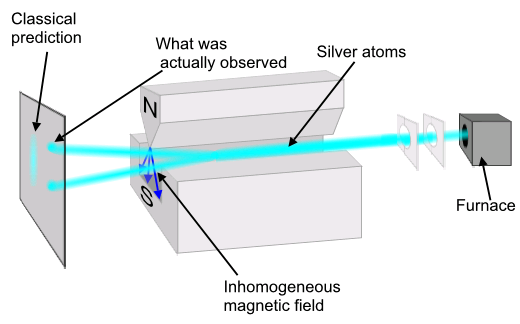

Classical physics tells us that if a particle were to be shot through a magnetic field the probability that the particle passes through a plane right after the magnetic field is evenly distributed.
When this experiment is actually done a different result occurs. The particles actually form lines in the plane. Quantum physics can be used to calculate the probability that a particle hits at a certain point on the plane.